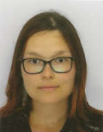

|
 | Carole GRELLETYAge : 29 ans |
| Depuis septembre 2020 | Licence d'Histoire (Etudes à distance) Université de Toulouse Jean-Jaurès Diplôme universitaire d'étude et pratique de la langue - spécialité Russe (Etudes à distance) Université de Toulouse Jean-Jaurès |
| Septembre 2016 - Septembre 2017 | Master I - Conception et direction de projets culturels, spécialité Médiation Culturelle Université Paris III - Sorbonne-Nouvelle Sujet de mémoire : "La démocratisation de la musique metal en France" (mention bien). |
| Septembre 2015 - Septembre 2016 | Licence professionnelle - Médiation culturelle et valorisation des expressions artistiques Université de Cergy-Pontoise |
| Septembre 2013 - Juin 2015 | Brevet de technicien supérieur - spécialité Tourisme Lycée Jacques Feyder, Epinay-sur-Seine |
| Compétences | Niveau | Langues | Niveau |
|---|---|---|---|
| Aisance rédactionnelle | ★ ★ ★ ★ ★ | Français (langue maternelle) | ★ ★ ★ ★ ★ |
| Aisance relationnelle | ★ ★ ★ ★ ★ | Anglais | ★ ★ ★ ★ |
| Médiation culturelle | ★ ★ ★ ★ ★ | Allemand | ★ ★ ★ ★ |
| Internet et Réseaux sociaux | ★ ★ ★ ★ | Italien | ★ ★ |
| Pack office | ★ ★ ★ | Russe | ★ | Fonctionnement des collectivités territoriales | ★ ★ ★ |